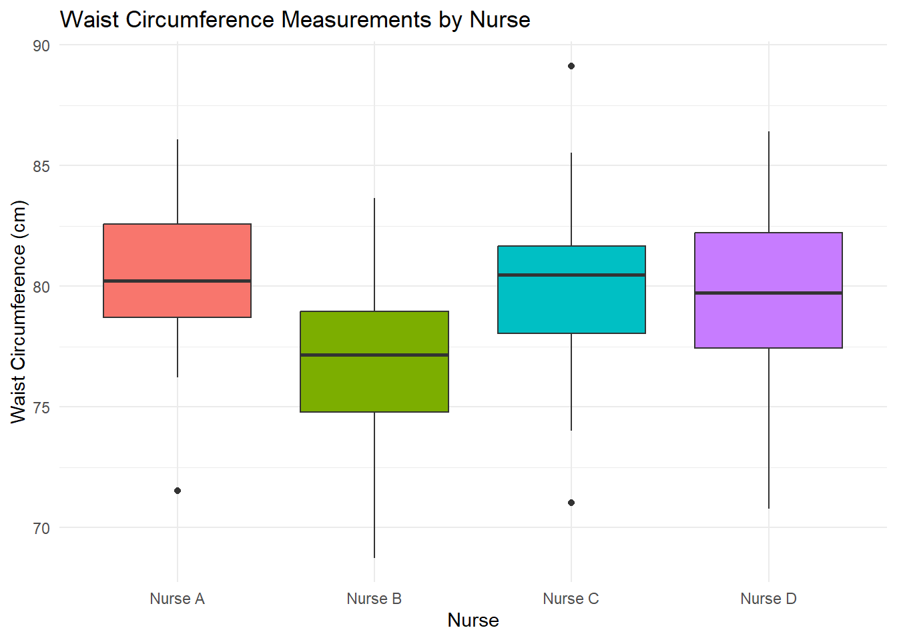
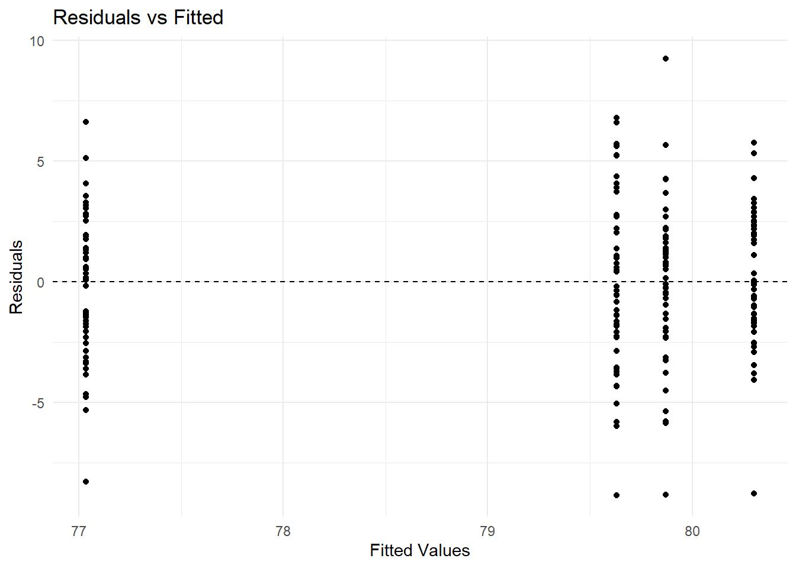
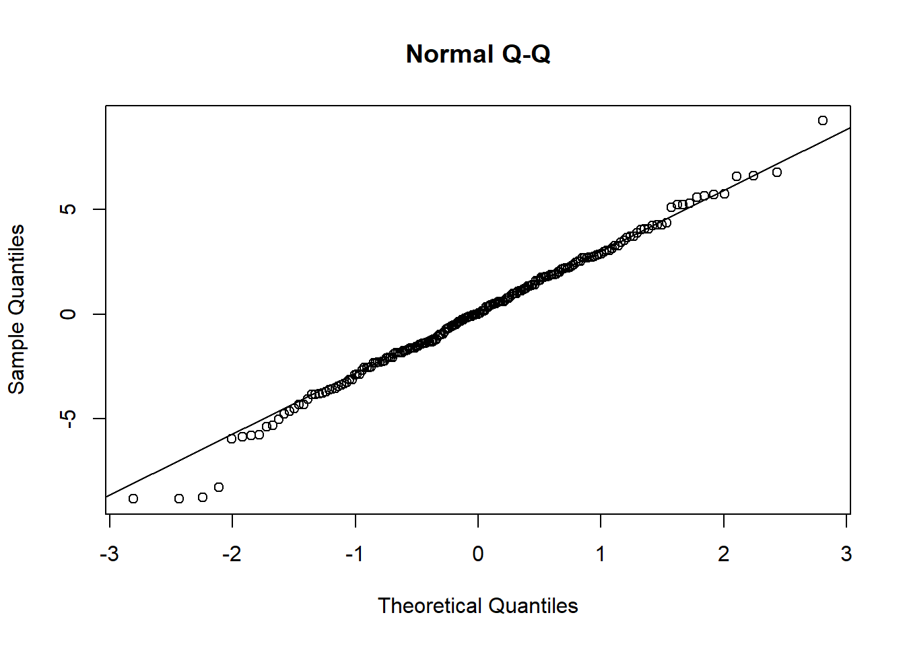

# Setting seed for reproducibility
set.seed(789)
# Number of nurses and measurements per nurse
num_nurses <- 4
measurements_per_nurse <- 50
# Simulating nurse effects (random effects)
nurse_effects <- rnorm(num_nurses, mean = 0, sd = 1.5) # Nurse-specific deviations
# Simulating residual errors
residual_errors <- rnorm(num_nurses * measurements_per_nurse, mean = 0, sd = 3)
# Simulating Waist Circumference Measurements
Waist_Circumference <- 80 + rep(nurse_effects, each = measurements_per_nurse) + residual_errors
# Creating Nurse factor
Nurse <- factor(rep(paste("Nurse", LETTERS[1:num_nurses]), each = measurements_per_nurse))
# Combining into a data frame
data_waist_circumference <- data.frame(
Nurse = Nurse,
Waist_Circumference = Waist_Circumference
)Beyond Linear Regression Lab 2: Random Effects Model for the One-Way Layout
Example: Waist Circumference Measurements Recorded by Different Nurses
Consider an observational study in which waist circumference measurements (in centimeters) are taken by multiple nurses. These nurses may have varying measurement techniques, levels of experience, or adherence to standardized protocols, leading to variability in recorded waist circumference measurements. Our aim is to assess the extent of variability in waist circumference measurements attributed to differences among nurses.
To facilitate our analysis, we will simulate a dataset where waist circumference measurements are recorded by four different nurses.
The above R chunk simulates 200 hypothetical waist circumference measurements for four different nurses (50 measurements per nurse) and stores the results in the data frame data_waist_circumference that consists of the following two columns:
Nurse: Factor variable indicating the nurse who performed the measurement (Nurse A, Nurse B, Nurse C, Nurse D).Waist_Circumference: Numeric variable representing the waist circumference measurement (in centimeters).
Exploratory Data Analysis
Before modeling, it’s important to visualize and summarize the data to identify any trends, patterns, or anomalies that may impact the analysis. In this case, we aim to explore the variability in waist circumference measurements across nurses and assess the consistency of these measurements.
We’ll use two main approaches:
- Visualizing the data: A boxplot will be created to compare waist circumference measurements across nurses, highlighting differences in measurement tendencies or variability.
- Summarizing the data: Summary statistics (mean and standard deviation) will be computed for each nurse, providing a numerical overview of central tendency and spread for the measurements.
# Create a boxplot
library(ggplot2)
ggplot(data_waist_circumference, aes(x = Nurse, y = Waist_Circumference, fill = Nurse)) +
geom_boxplot() +
labs(title = "Waist Circumference Measurements by Nurse",
x = "Nurse", y = "Waist Circumference (cm)") +
theme_minimal() +
theme(legend.position = "none")
# Calculate summary statistics
library(dplyr)
summary_stats_random <- data_waist_circumference %>%
group_by(Nurse) %>%
summarise(
Mean_Waist = mean(Waist_Circumference),
SD_Waist = sd(Waist_Circumference)
)
summary_stats_random# A tibble: 4 × 3
Nurse Mean_Waist SD_Waist
<fct> <dbl> <dbl>
1 Nurse A 80.4 2.69
2 Nurse B 76.9 3.01
3 Nurse C 79.9 3.15
4 Nurse D 79.7 3.56Random Effects Model for the One-Way Layout
A random effects model represents variations assumed to arise from a larger population. Unlike fixed effects, which estimate specific differences between levels of a factor, random effects account for variability among factor levels by treating them as random samples from a broader population.
In the waist circumference example, the four nurses can be considered a random sample from a larger population of nurses. By modeling “Nurse” as a random effect, we aim to generalize the findings about measurement variability to the broader population of nurses, rather than focusing solely on the four in the study.
Model Specification
The random effects model can be specified as:
\[ Y_{ij} = \mu + b_i + \epsilon_{ij} \]
where:
- \(Y_{ij}\): The waist circumference measurement for the \(j\)-th observation by the \(i\)-th nurse.
- \(\mu\): The overall mean waist circumference.
- \(b_i\): The random effect of the \(i\)-th nurse, assumed to be normally distributed with mean zero and variance \(\sigma^2_{b}\).
- \(\epsilon_{ij}\): The error term, assumed to be independently and normally distributed with mean zero and variance \(\sigma^2\).
The use of random effects allows us to decompose the total variance in the outcome variable into distinct components, each associated with a different source of variation. In this example, the total variance in waist circumference measurements is split into two variance components:
Between-nurse variability (\(\sigma^2_{b}\)): This component, represented by the variance of the random effect \(b_{i}\), captures the variability in waist circumference measurements attributable to differences among nurses. It reflects how much of the overall variability is due to systematic differences in measurement techniques or practices between nurses.
Residual variance (\(\sigma^2\)): This component, represented by the variance of the error term \(\epsilon_{ij}\), captures the variability in waist circumference measurements that remains unexplained by nurse-related differences. It includes measurement error, patient-specific factors, and other unmeasured sources of variation.
Notation convention
In mixed-effects models, fixed effects are typically represented by Greek letters, while random effects are represented by Roman letters. This helps differentiate between the two types of effects in model specification.
Intraclass Correlation Coefficient
The Intraclass Correlation Coefficient (ICC) is a statistical measure that quantifies the proportion of the total variance in the outcome variable that can be attributed to differences between groups. In this context, the ICC measures the extent to which waist circumference measurements are more similar when taken by the same nurse (within-group), compared to the overall variability across all nurses (between-group). In other words, it tells us how strongly measurements are correlated within the same group.
Mathematically, the ICC is calculated as:
\[ ICC = \frac{\sigma^2_{b}}{\sigma^2_{b} + \sigma^2} \]
Interpretation of ICC:
ICC \(\approx\) 0: Indicates that nearly all the variability in waist circumference measurements is due to residual factors (such as patient differences or measurement error). This suggests that nurse-level differences contribute minimally to the total variability, implying a high degree of consistency across nurses in their measurement practices.
ICC \(\approx\) 1: Indicates that nearly all the variability is attributable to differences between nurses. This suggests substantial between-nurse variability, meaning different nurses consistently record different waist circumference measurements.
Model Estimation
We will fit the random effects model using the lmer() function from the lme4 package.
# Fitting the random effects model
library(lme4)
model_random <- lmer(Waist_Circumference ~ 1 + (1 | Nurse), data = data_waist_circumference)
summary(model_random)Linear mixed model fit by REML ['lmerMod']
Formula: Waist_Circumference ~ 1 + (1 | Nurse)
Data: data_waist_circumference
REML criterion at convergence: 1030.5
Scaled residuals:
Min 1Q Median 3Q Max
-2.83380 -0.59987 0.00698 0.66169 2.96673
Random effects:
Groups Name Variance Std.Dev.
Nurse (Intercept) 2.358 1.536
Residual 9.730 3.119
Number of obs: 200, groups: Nurse, 4
Fixed effects:
Estimate Std. Error t value
(Intercept) 79.2094 0.7989 99.15Syntax overview
Let’s break down the model formula Waist_Circumference ~ 1 + (1 | Nurse)
Waist_Circumference ~ 1: This specifies thatWaist_Circumferenceis the outcome variable and that the fixed effects structure consists of a single intercept, modeled by the term1, that represents the overall mean waist circumference across all nurses.(1 | Nurse): This specifies the random effect forNurse, representing nurse-specific deviations from the overall mean.
Summary overview
When you run summary(model_random), the output will display:
- Fixed Effects: Estimates of the fixed effects
- Intercept: The overall mean waist circumference across all nurses.
- Random Effects: Estimates of the two variance components
- Nurse - Intercept: Between-nurse variability (\(\sigma^2_{b}\)).
- Residual: Residual variance (\(\sigma^2\)).
No p-values
The lme4 package does not provide p-values for fixed effect estimates. This is a deliberate choice by the package authors, based on concerns about the appropriateness of traditional hypothesis testing methods in the context of mixed effects models. In subsequent labs, we will use of the lmerTest package to calculate these p-values and add them to the summary output.
Assessing the variance components
Model Diagnostics
In mixed-effects models, model diagnostics involve analyzing different types of residuals to evaluate how well the model fits the data and to assess whether key assumptions are satisfied.
The default type of residuals used in these models are the conditional residuals, which are calculated based on predicted values that incorporate both fixed effects and estimated random effects. Conditional residuals represent the deviation of the observed data from the model’s predictions, accounting for variability from both sources: fixed effects and random effects. They can be considered estimates of the errors \(\epsilon_{ij}\), which are assumed to be normally distributed with a mean of zero and constant variance.
To check these assumptions, we can generate diagnostic plots similar to those used in linear regression models:
- Residuals vs. Fitted Plot: This plot helps check for homoscedasticity (constant variance).
- Normal Q-Q Plot: This plot assesses whether the residuals follow a normal distribution.
# Extract conditional residuals and predicted values
residuals_model_random <- resid(model_random)
fitted_model_random <- fitted(model_random)
# Residuals vs Fitted
ggplot(data.frame(Fitted = fitted_model_random, Residuals = residuals_model_random), aes(x = Fitted, y = Residuals)) +
geom_point() +
geom_hline(yintercept = 0, linetype = "dashed") +
labs(title = "Residuals vs Fitted",
x = "Fitted Values", y = "Residuals") +
theme_minimal()
# Normal Q-Q
qqnorm(residuals_model_random, main = "Normal Q-Q")
qqline(residuals_model_random)
Reporting
A random effects model was fitted to assess the variability in waist circumference measurements across nurses. The overall mean waist circumference was estimated at 79.21 cm. The variance due to differences among nurses was 2.36 cm² and the residual variance was 9.73 cm², resulting in an Intraclass Correlation Coefficient (ICC) of 0.195.